🌱 Quiz da Sustentabilidade
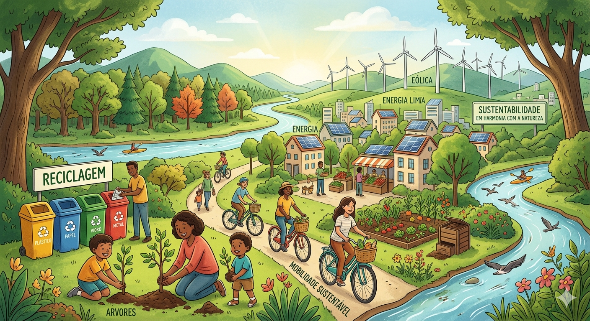
Bem-vindo ao Quiz da Sustentabilidade!
Teste seus conhecimentos sobre meio ambiente,
agricultura sustentável, reciclagem e preservação
dos recursos naturais.
Começar
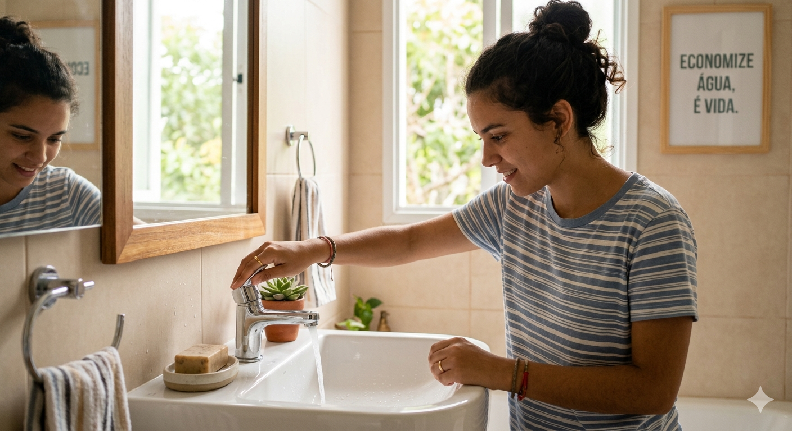
Qual atitude ajuda a economizar água?
Fechar a torneira ao escovar os dentes
Lavar a calçada com mangueira
Deixar vazamentos sem conserto
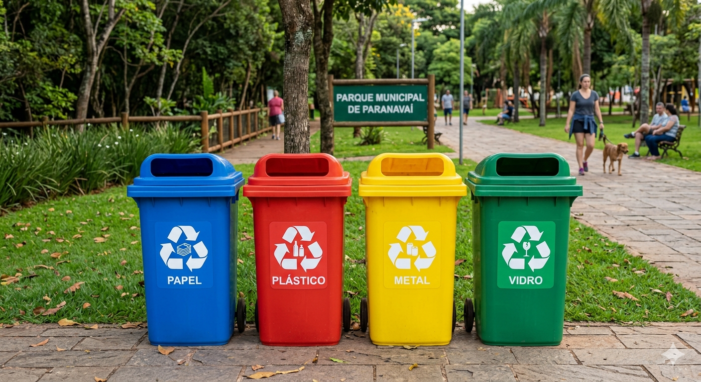
O que significa reciclagem?
Transformar resíduos em novos produtos
Queimar todo o lixo
Jogar lixo no rio
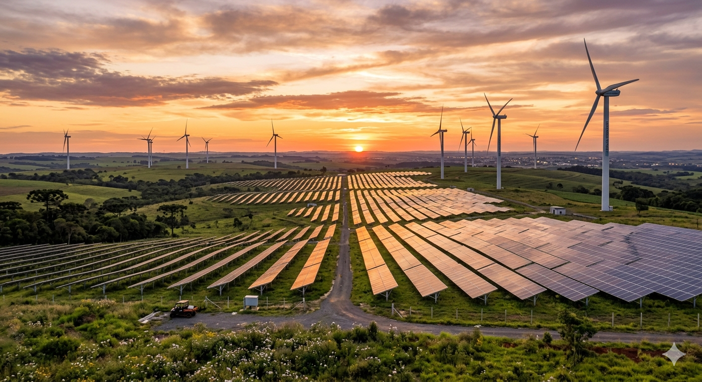
Qual destas é uma energia renovável?
Energia Solar
Petróleo
Carvão Mineral
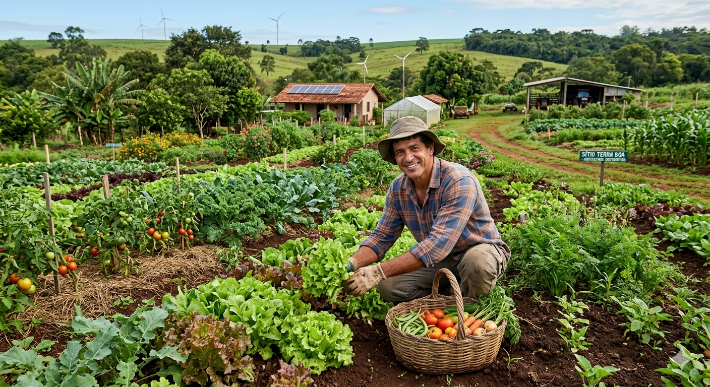
O que é agricultura sustentável?
Produzir respeitando o meio ambiente
Desmatar para plantar
Utilizar recursos sem controle
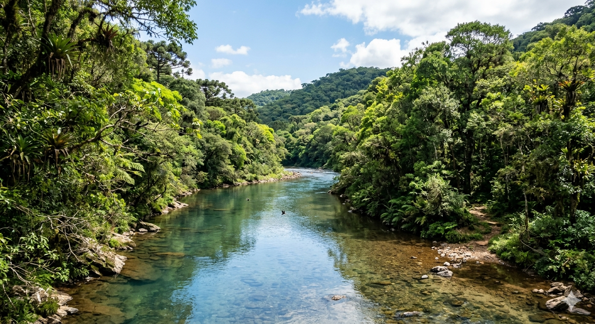
Por que devemos preservar os rios?
Porque fornecem água e vida
Não possuem importância
Apenas ocupam espaço
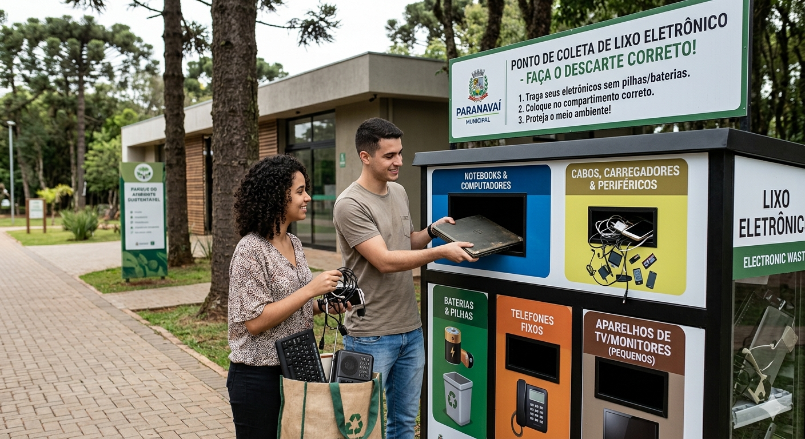
Onde devemos descartar lixo eletrônico?
Em pontos de coleta
No rio
No quintal
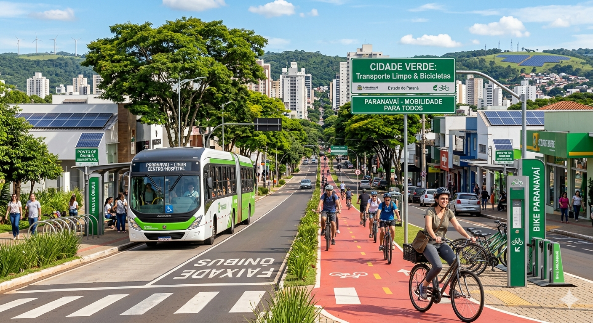
Qual atitude reduz a poluição?
Utilizar transporte coletivo
Queimar lixo
Jogar resíduos nas ruas
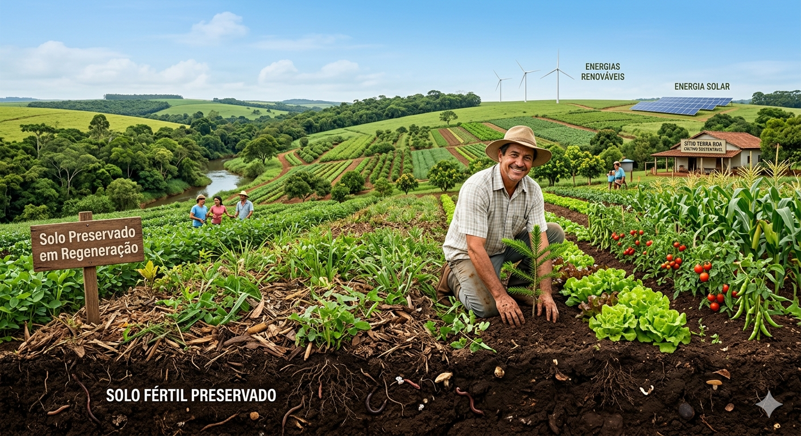
Como proteger o solo?
Evitando erosão e desmatamento
Jogando lixo
Retirando toda vegetação
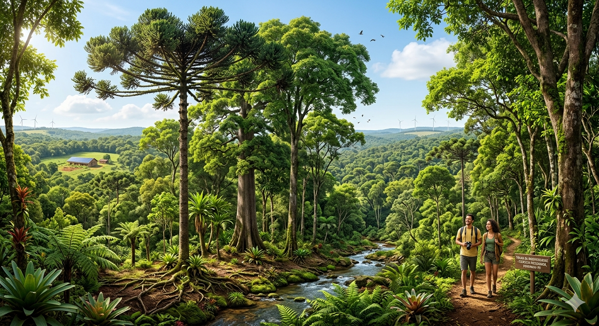
Qual a importância das árvores?
Produzem oxigênio
Não possuem função
Apenas fazem sombra
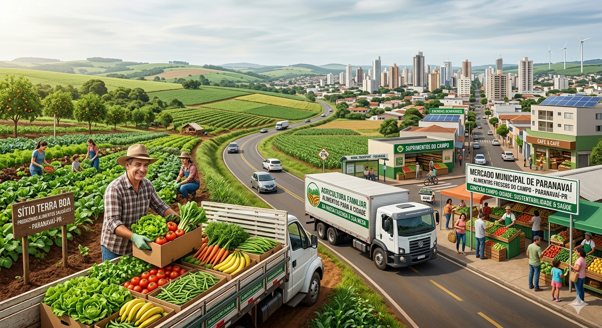
Qual a relação entre campo e cidade?
O campo produz alimentos para a cidade
Não possuem relação
São independentes
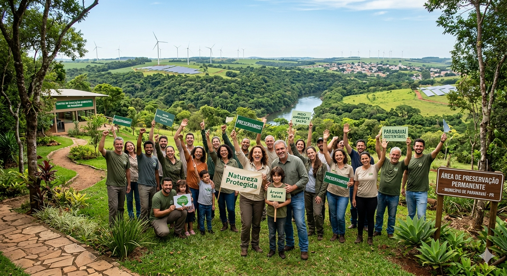
Resultado
Jogar Novamente